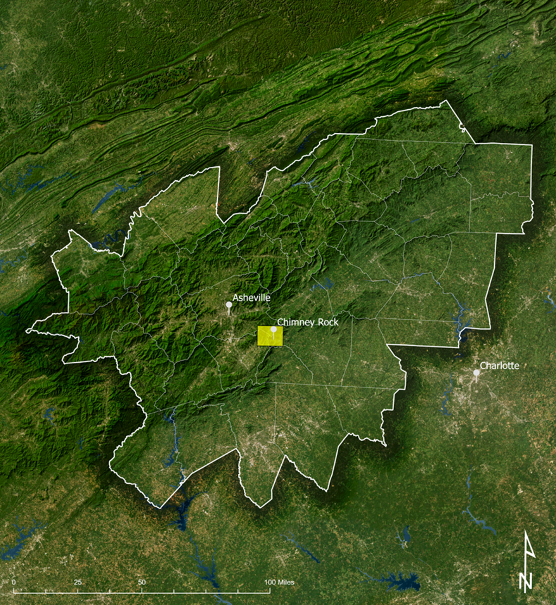
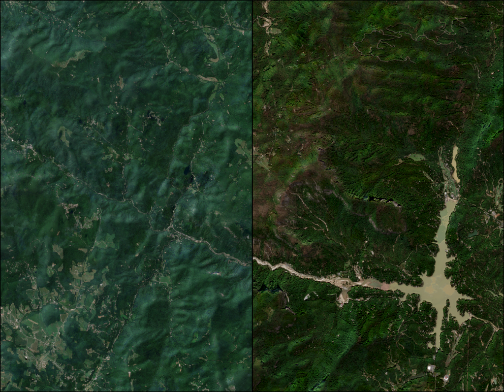
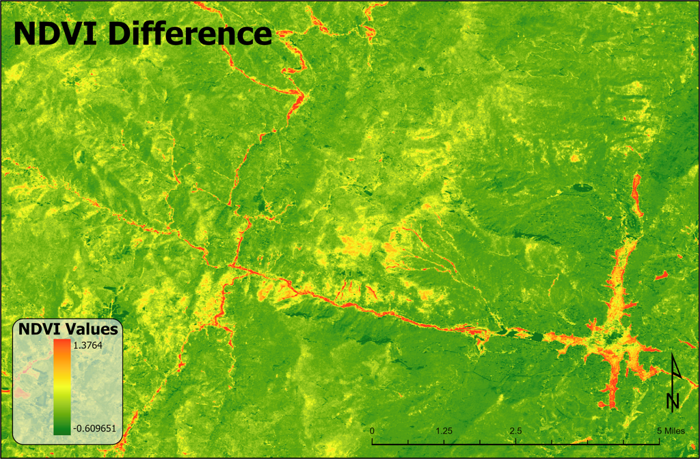
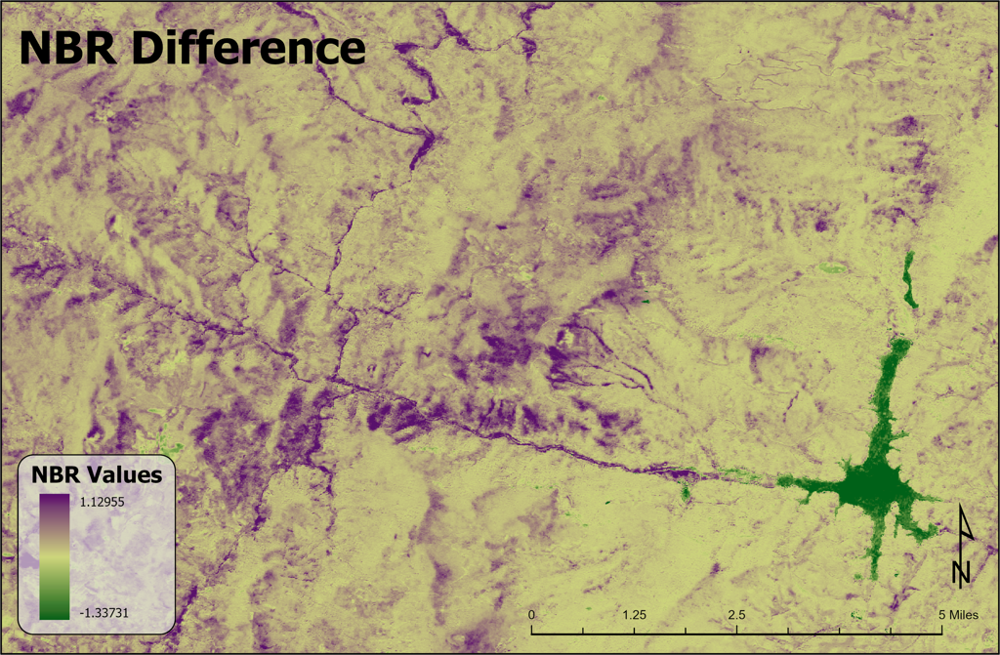
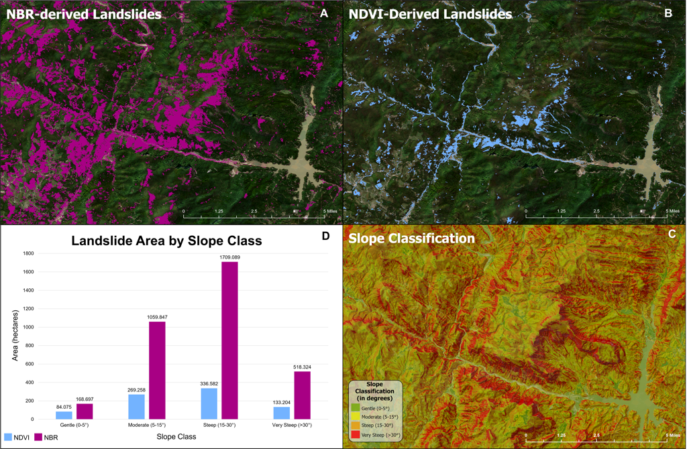

Project
Post-Hurricane Helene Landslide Detection Using Google Earth Engine
Abstract
As climate-induced disasters become more frequent, rapid identification of at-risk areas is crucial to protecting communities and fostering resilience. This project demonstrates the rapid capabilities of Google Earth Engine for assessing environmental disasters by identifying landslide-prone areas in Western North Carolina following Hurricane Helene. The findings aim to support disaster response and inform strategies for resilient and sustainable community development.
Using Sentinel-2 imagery processed in Google Earth Engine, this project applied cloud masking, Normalized Difference Vegetation Index (NDVI), and Normalized Burn Ratio (NBR) to quantify significant land cover changes. Key thresholds and slope data were used to isolate landslide areas and assess terrain characteristics in affected regions.
Preliminary findings indicate that landslide detection was highly effective, accurately classifying most landslide-prone areas validated through visual interpretation of true color imagery. NBR identified landslide areas to a broader extent, while NDVI proved more effective for detecting changes near streams and turbid water bodies. These results underscore the value of Google Earth Engine for swift environmental disaster assessments and can inform disaster mitigation, planning, and community resilience efforts in landslide-prone areas.
Project Details
Maps and Figures




